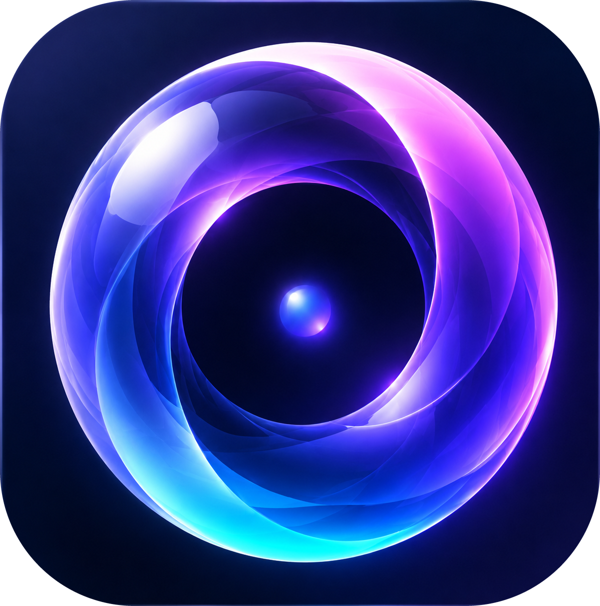

その場にふさわしい音だけがある状態——静けさ——を、 周波数の関係として彫刻する作曲家。
倍音と 1/f ゆらぎに支えられた、生きた静けさのための作品を手がける。 署名するのは、固定された音列ではなく、音場を生む「調律の設計」そのもの。
この部屋は、十分に静かだと思っていた。
——けれど、本当の静けさを知ってしまうと、
もう「音が無いだけ」では足りなくなる。 FLUX RING が生まれた、はじまりの感覚
静けさとは、無音のことではありません。
その場にふさわしい音だけが、そこにある状態のこと。私たちはいつのまにか、ふさわしくない音に囲まれていることに、気づかなくなっています。
音楽家だけが、周波数と周波数のあいだを彫刻できる。
どの音を選ぶかではなく、音と音がどう関係するか。その関係を設計することでしか、生きた静けさは生まれません。だから私は、一曲ではなく「調律の設計」に署名します。
FLUX RING は、固定された一曲を届ける装置ではありません。
あなたの空間に、倍音と 1/f ゆらぎに支えられた音場を生み出すための設計です。鳴り方は一度きり。同じ瞬間は、二度と戻りません。
選ばせない。気づかせない。ただ、戻す。
操作するのではなく、その場を「ふさわしい音だけがある状態」へ静かに戻すこと。足すのではなく、引くこと。それが、FLUX RING の流儀です。